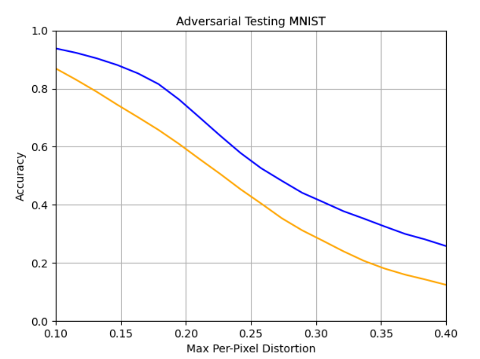

Team Members: Preston Lee, Ryan Park
Overview
In machine learning, ensemble methods are techniques that are applied to algorithms that can provide more meaningful data points or even more accurate results. For example, algorithms such as logistic regression and naïve bayes may be used to predict a certain outcome, but we could potentially combine these algorithms together as some sort of aggregation. Or, we could train an algorithm on subsets of data and combine the results together.
For the purpose of this project, we wanted to take a look into the dropout technique. Similar to the methods just mentioned, dropout is an ensemble technique used to regularize neural networks. For each hidden layer, dropout is roughly equivalent to taking an ensemble of 2^H networks (where H is the number of hidden units) which share weights. Theoretically, it is well-known in the machine learning community that the dropout technique can be viewed as an ensemble. For more information about how the ensemble perspective on dropout, Geoffrey Hinton's presentation on Dark Knowledge is useful.
However, there is less research that has been done on the effect of model diversity within dropout. No constraint in vanilla dropout enforces each of 2^H networks to be different from each other, and each permutation could theoretically converge to very similar models. In this work, we devise a simple method to enforce dropout diversity with a slight training time cost. We show the advantages of such a training scheme using MNIST and CIFAR10 test accuracies and also explore the method's effect on out-of-distribution data using adversarial examples.
Datasets
Our data set consist of MNIST and CIFAR10. MNIST is a database consisting of 60,000 training images and 10,000 testing images of hand written digits from 0-9. More information about this can be found on its wiki page: MNIST Database. CIFAR10 is a database consisting 60,000 32x32 images of 10 different classes including objects such as airplanes, cars, birds, etc. More information about this dataset can be found on its wiki page: CIFAR10 Database.
Previous Work
The article Deep Neural Network Ensembles against Deception: Ensemble Diversity, Accuracy and Robustness gives a detailed breakdown to what ensemble is and how we can use diversity constraint techniques to strengthen neural network ensembles. Furthermore, it also dives deep into the mathematical details that explain how ensemble accuracy can be increased and what methods we can rely on to help us understand our data.
In the work Amended Cross Entropy Cost: Framework For Explicit Diversity Encouragement, a loss function which explicitly encourages diversity within ensembles for classification tasks is created. Training in a manner which explicitly encourages uncorrelated representations between ensemble members is called negative correlation (NC) learning. In our work, we refer to the dropout model trained with negative correlation learning the Non-Correlated Model. For our code, we utilized pytorch and an adversarial testing library called Advertorch to help us with our project. Our code is located on the following github page Dropout Diversity.
Our Approach
We train a neural network model with dropout between all hidden layers end-to-end with a single modification to the training procedure. Given an input X, a label Y, a model Q, and a model using only neurons sampled by dropout Q', we compute the loss function:
L = H(Q'(X), Y) - H(Q(X), Q'(X))
where H is cross-entropy. This loss function is created by using the ACE loss in the Amended Cross Entropy paper and replacing the individual model output with Q'(X). In the implementation on the github repo, the cross-entropy between the model's output and the label is replaced with negative log-likelihood which is equivalent and more numerically stable than cross-entropy when the labels are hard targets.
The cross-entropy term between the output of the model and the dropout sample is maximized. This increases the difference between predictions of the ensemble and the prediction of a single permutation of neurons sampled by dropout. This enforces higher diversity in dropout samples. In implementation, the output of the ensemble is treated as a constant as in the Amended Cross Entropy paper. Unlike the Amended Cross Entropy paper, we do not experiment with varying degrees of diversity λ, nor do we minimize the entropy of the individual dropout samples. The latter is due to the fact that in the original paper, this loss term is divided by the number of models in the ensemble, which is negligible in most dropout models where the value of 1/(2^H) is about 0.
Although this is not the primary point of this work, it should be noted that this training procedure is about 25% slower than a normal training procedure with only the first loss term. This is due to the fact that the full dropout model must be run as well as the dropout sample. This is a problem that is likely trivially optimized as the full dropout model computes every neuron that the single dropout sample computes. We do not delve into optimization in this work, but we believe that the performance costs should be negligible with proper optimization.
Results
MNIST and CIFAR10 Test Accuracy
To show the effects of We test the Non-Correlated Model against a baseline dropout model with only the cross entropy loss term between the dropout sample and the hard label. Each model was run 10 times on both MNIST and CIFAR10 in the test accuracy experiments starting from random initialization for 25 epochs. Both models were optimized using Adadelta with a learning rate of 1.
In the MNIST test, the Non-Correlated Model shows a clear lead over the baseline. The baseline has both a lower mean accuracy over the 10 runs and a higher variance. The mean accuracy of the Non-Correlated Model nearly matches the best test accuracy of the baseline. We propose that unconstrained dropout (the baseline) has no clear diversity constraint, but each dropout sample can randomly become more diverse, leading to better generalization. Without constraint, each of the dropout samples can also converge onto each other, leading to worse generalization. This would explain the higher variance in test accuracy as the dropout samples are randomly diverse or not. In the Non-Correlated model, the Negative Correlation loss causes each dropout sample to be diverse from each other, leading to a model which has the best that the model architecture has to offer.

In the CIFAR10 test, we see a similar phenomenon appear wherein the mean test accuracy of the Non-Correlated Model nearly matches the best test accuracies of the baseline. Even though the model we used was small and cannot converge to a remarkable test accuracy on CIFAR10, the differences between the baseline and the Non-Correlated Model are still visible. The Non-Correlated Model has lower variance and a higher test accuracy mean than the baseline.
Out-of-distribution Tests with Adversarial Examples
In order to demonstrate the clear advantages of using such a training procedure, we devised a test which would test each model's accuracy on out-of-distribution samples. For this test, we used the Fast Gradient Sign Method to produce adversarial examples from the test set for each model with a maximum per-pixel distortion (where each pixel/channel is a value from 0 to 1). We then calculated the test accuracies of each model on these adversarial examples to determine how well the model could generalize on slightly-perturbed, out-of-distribution examples.
Some adversarial examples on MNIST at 0.4 max per-pixel distortion:
| Labelled 6. Baseline predicted 5. | Labelled 8. NC predicted 5. | Labelled 2. Baseline predicted 3. | Labelled 0. NC predicted 0. |

On MNIST, the Non-Correlated Model enjoys a small, but significant lead over the baseline model. Due to the simplicity of the problem, the max per-pixel distortion could be set to a very high number before test accuracies were 0%. Overall, the Non-Correlated Model was always about 10 percentage points higher in test accuracy across all max pixel distortion values.
Some adversarial examples on CIFAR10 at 0.01 max per-pixel distortion:
| Labelled bird. NC predicted bird. | Clean version of example on the right. | Labelled truck. Baseline predicted horse. | Clean version of example on the right. |
CIFAR10 is a much more complex dataset with larger 32x32 pixel images and three color channels, as well as more ambiguity between classes due to viewpoints and colored objects. On this dataset, the NC model observes a clear ~4 percentage point lead over the baseline at all distortion maximums.
Discussion
Our Non-Correlated Model consistently provides the best test accuracies that dropout models have to offer on both the MNIST and CIFAR10 and performs significantly better in the face of small pixel perturbations, implying that ensemble diversity is correlated with out-of-distribution performance. In this work, we do not delve into what kinds of diversity are useful, assuming that any constraint which maximally increases diversity while still allowing the model to optimize towards the main objective function is beneficial. In further work, we would like to be more specific in what kinds of diversity we optimize for and be able to quantify the amount of "diversity" in any given dropout model. We would also like to test against more types of adversarial attacks in order to characterize the adversarial resistance Non-Correlated Models. Under these testing conditions, it is possible that Non-Correlated Models are more resistant to FGSM because their gradients make it harder for gradient attacks to find suitable adversarial examples. This would warrant an investigation into gradientless methods for finding adversarial examples to find out whether Non-Correlated Models are resistant against these types of attacks, too.
Video
YOUTUBE